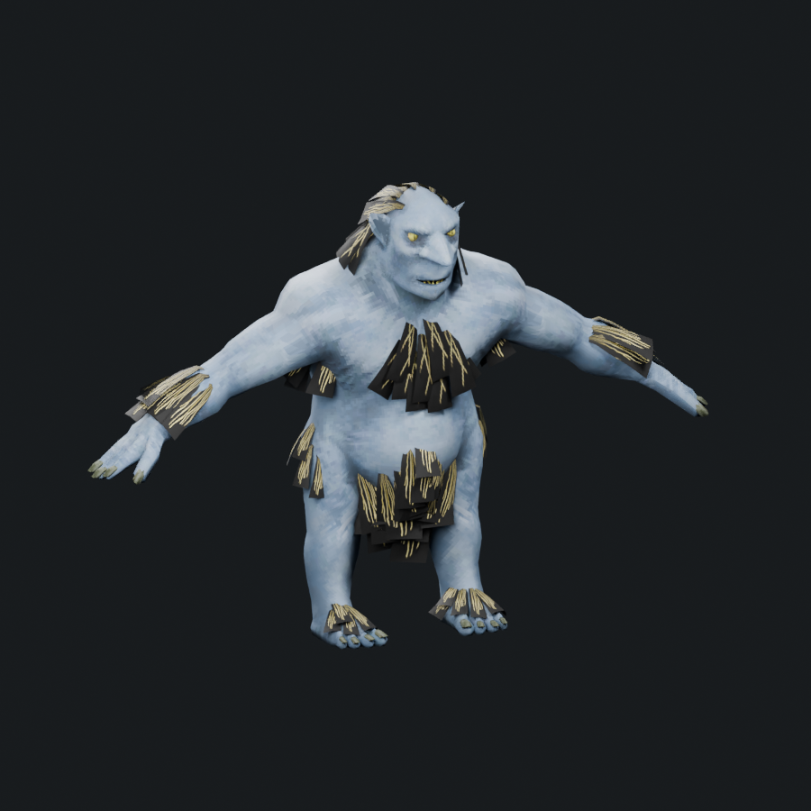
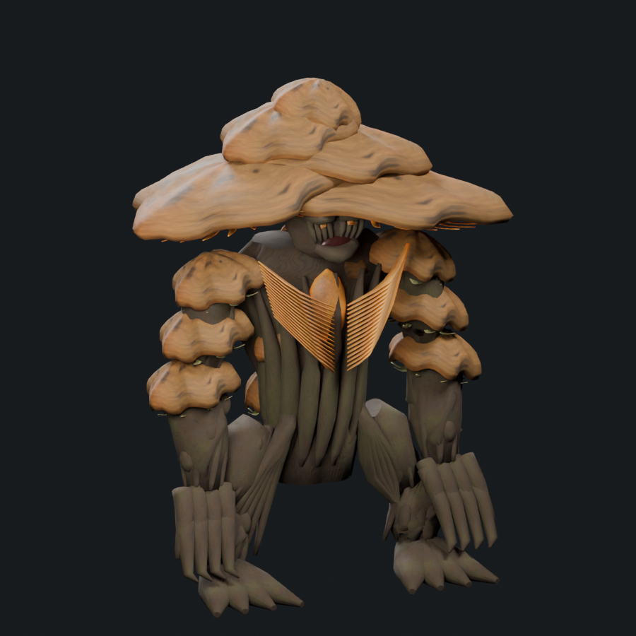
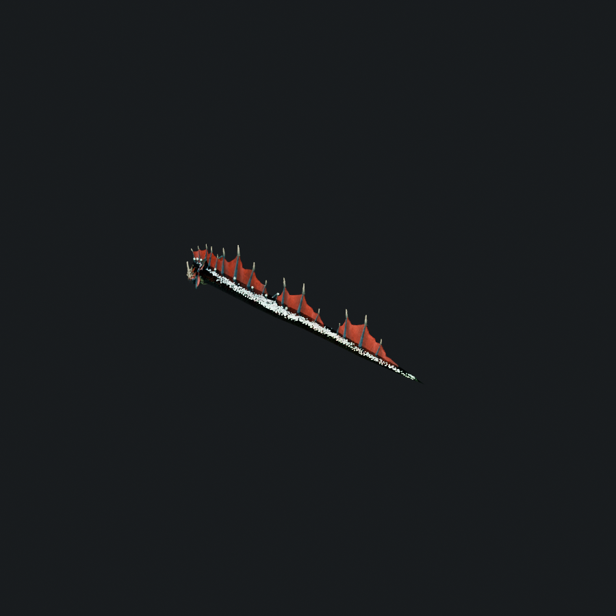
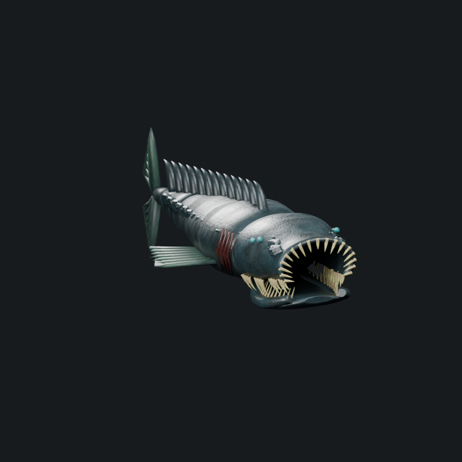
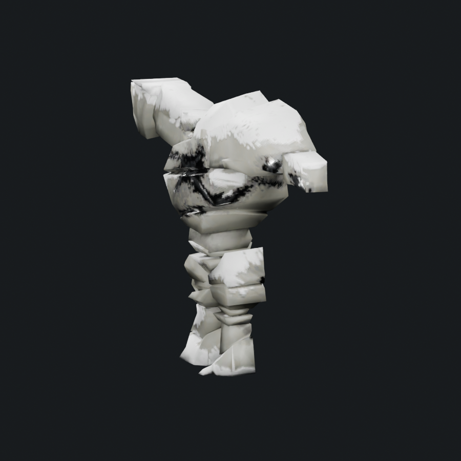
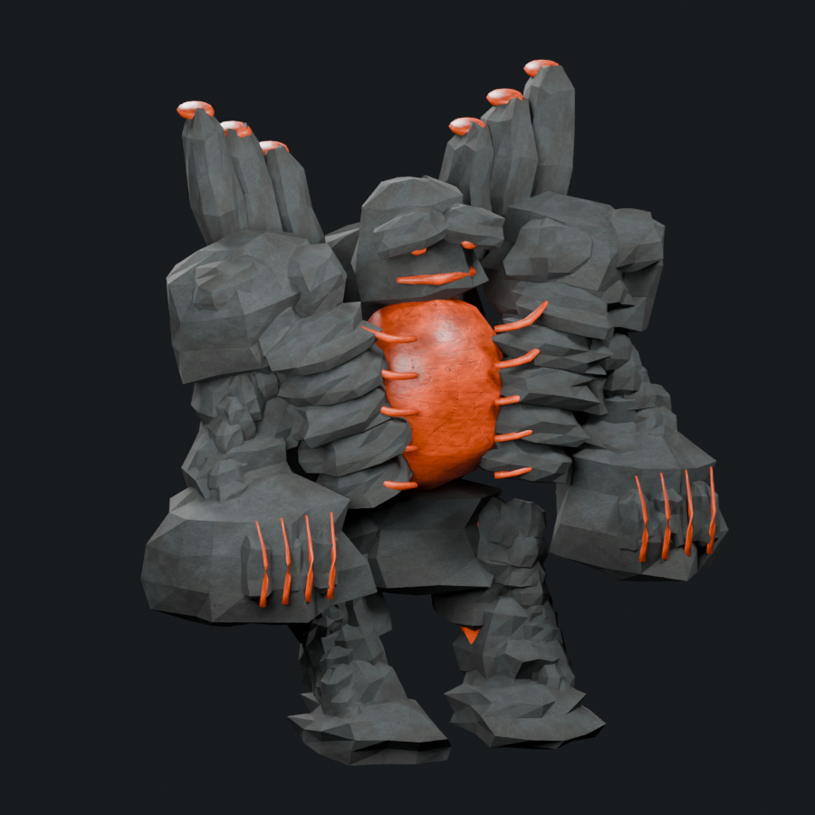
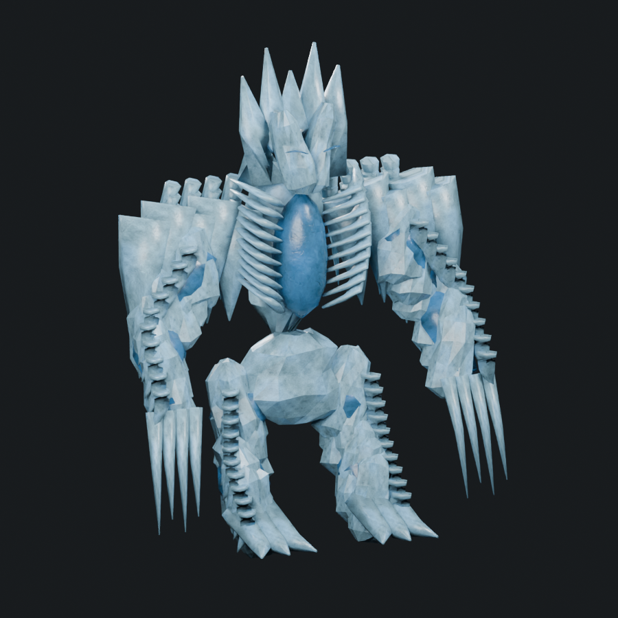
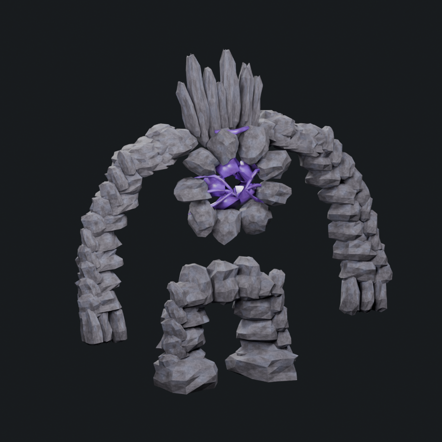
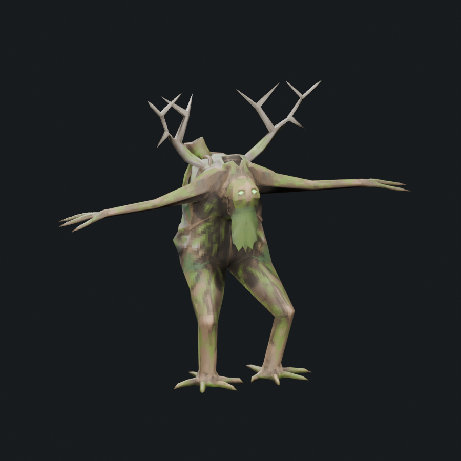
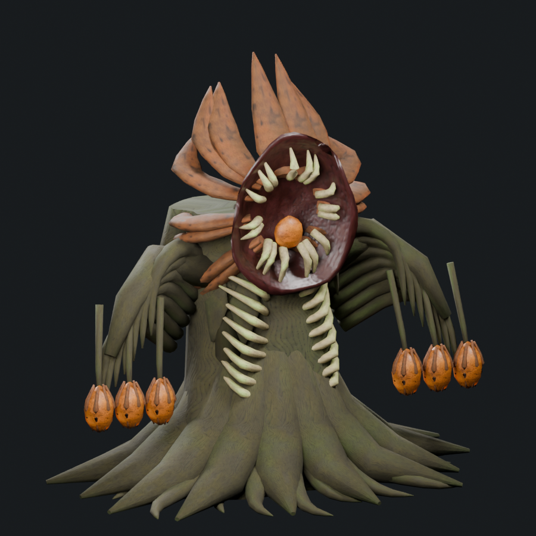

Boss donor-quality revision 2
The actual donor models are the minimum visual quality bar.
Compare the adopted concepts, extracted native donors, rejected first pass and revised anatomy. Donor and revision renders use the same lighting, exposure, viewing direction and framing rule. Select Geometry only to remove texture and emission from the comparison.
The native references are local asset bind poses with approximate Principled materials. They show authored geometry and texture detail; native animation, shader effects and live combat poses are not reproduced. Revisions retain species rigs as a baseline and remain uninstalled art candidates. More polygons are not an acceptance result.
The First Bloom
 Adopted concept
Adopted concept
Native Troll · bind pose Rejected first pass
Rejected first pass
Revised anatomy and materialsRebuilt the plain pelvis/torso into a continuous root trunk; added interlaced load-bearing roots, scarred joints, a recessed facial mask, rolled shelf rims and individual folded gill lamellae.
Source study: 91,516 triangles / 31 bone/material parts. Native extraction: 6,206 triangles / 2 renderers. Counts describe cost; donor visual quality is the acceptance criterion.
The Blackwater Maw
 Adopted concept
Adopted concept
Native Serpent · bind pose Rejected first pass
Rejected first pass
Revised anatomy and materialsReplaced the pipe-shaped mouth with a closed, thickness-bearing wedge skull and hinged lower jaw. Added uneven fang rows, cheek armor, flank scales, strengthened fin roots and membrane folds.
Source study: 31,412 triangles / 16 bone/material parts. Native extraction: 4,872 triangles / 1 renderers. Counts describe cost; donor visual quality is the acceptance criterion.
The Furnace Heart
 Adopted concept
Adopted concept
Native StoneGolem · bind pose Rejected first pass
Rejected first pass
Revised anatomy and materialsReplaced beveled blocks with unequal fractured rock profiles; added interlocking shoulder spalls, joint scales, chipped facial armor and narrow molten cracks around the exposed chamber.
Source study: 19,480 triangles / 22 bone/material parts. Native extraction: 1,200 triangles / 1 renderers. Counts describe cost; donor visual quality is the acceptance criterion.
The White Silence
 Adopted conceptNative StoneGolem · bind pose
Adopted conceptNative StoneGolem · bind pose Rejected first pass
Rejected first pass
Revised anatomy and materialsReplaced the square face with a cleft ice mask; layered the mantle with irregular ice blades, fine icicles, overlapping joint shards and a ribbed hollow spine.
Source study: 13,024 triangles / 21 bone/material parts. Native extraction: 1,200 triangles / 1 renderers. Counts describe cost; donor visual quality is the acceptance criterion.
The Rift Titan
 Adopted conceptNative StoneGolem · bind pose
Adopted conceptNative StoneGolem · bind pose Rejected first pass
Rejected first pass
Revised anatomy and materialsRebuilt repeated blocks as distinct fractured strata; added outer broken planes, asymmetric shoulder masses and split crown menhirs surrounding the exposed binding cage.
Source study: 16,376 triangles / 14 bone/material parts. Native extraction: 1,200 triangles / 1 renderers. Counts describe cost; donor visual quality is the acceptance criterion.
The Carrion Crown
 Adopted concept
Adopted concept
Native Greydwarf_Shaman · bind pose Rejected first pass
Rejected first pass
Revised anatomy and materialsRebuilt the uniform flower rim into torn overlapping sepals; added a layered tooth crown, grafted branches, torn bark sheaths, ribbed seed capsules and divided root fingers.
Source study: 29,212 triangles / 12 bone/material parts. Native extraction: 1,422 triangles / 4 renderers. Counts describe cost; donor visual quality is the acceptance criterion.